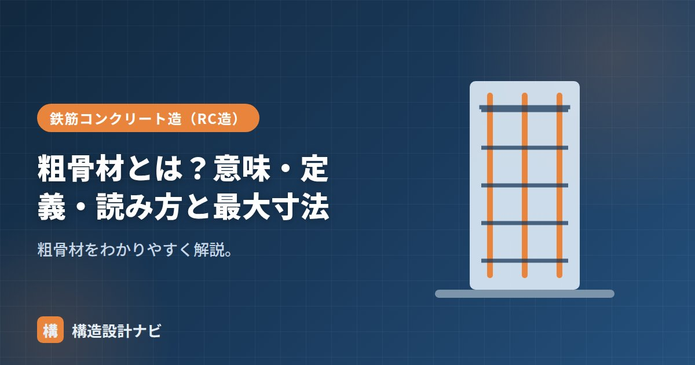

粗骨材とは？意味・定義・読み方と最大寸法

粗骨材（そこつざい）とは、骨材のうち粒の大きいものを指し、代表的には砂利や砕石です。コンクリートの体積の多くを占め、骨格をつくる主要材料であり、粗骨材の性質（粒の大きさ・形・強さ）はコンクリート全体の経済性・強度・耐久性に直結します。細かい砂である細骨材と対になる言葉で、両者は5mmという粒径を境に区別されます。
- 粗骨材は「5mmふるいに質量で85%以上とどまる」骨材と定義される（細骨材との境目）。
- 砂利・砕石・人工軽量骨材・再生骨材など種類があり、それぞれ特徴が異なる。
- 粒の大きさの上限は「粗骨材の最大寸法」で別途管理し、鉄筋あき・かぶりとの関係で決まる。
読み方と意味
読み方は「そこつざい」です。「粗い（あらい）骨材」の意味で、粒の細かい「細骨材（さいこつざい）」に対する言葉として使われます。英語ではcoarse aggregate（クラースアグリゲート）と呼び、対する細骨材はfine aggregateです。
定義（5mmふるい）
粗骨材は、5mmのふるいに質量で85%以上とどまる骨材と定義されます。逆に5mmふるいを85%以上通るものが細骨材です。5mmという粒径が、粗・細を分ける境目になります。
コンクリートでの役割
粗骨材は、コンクリートの体積のおよそ4割前後を占める骨格材料です。セメントペースト（セメント＋水）だけでコンクリートをつくると乾燥収縮やひび割れが大きく、価格も高くなります。粗骨材を多く配合することで、ペーストの量を相対的に減らし、収縮を抑えつつ経済的に強度・耐久性を確保できます。粒の形が丸みを帯びているか角張っているかによって、コンクリートの流動性（ワーカビリティ）にも差が出ます。
粗骨材の種類
- 砂利（じゃり）：川や山、海で採れる丸みのある粒。表面が滑らかで流動性を確保しやすい。
- 砕石（さいせき）：岩石を破砕機で砕いた角張った粒。砂利より入手しやすく、現在の主流。
- 人工軽量粗骨材：軽量コンクリート用に焼成した多孔質の粒。密度が小さい。
- 再生粗骨材：解体コンクリートを破砕・再生した骨材。品質等級に応じて用途が限定される。
求められる品質
粗骨材には、単に大きさだけでなく次のような品質が求められます。
| 項目 | 求められる性質 |
|---|---|
| 粒度分布 | 大小の粒がバランスよく混ざり、すき間を減らせること |
| 吸水率 | 低いこと（高いと単位水量が増え強度が下がりやすい） |
| 強さ・すりへり抵抗 | コンクリート自体の強度を下回らないこと |
| 有害物量 | 泥分・有機不純物などが少ないこと |
これらの品質は、RC造のコンクリートの強度・耐久性を左右するため、JIS規格で試験方法・基準値が定められています。
最大寸法との関係・違い
粗骨材そのものの「粒の種類・品質」を扱うのがこの記事のテーマですが、粗骨材の「大きさの上限」を扱うのが別の指標である粗骨材の最大寸法です。最大寸法は、鉄筋のすき間やかぶりを通って充填できるかという施工上の制約から決まる値で、粗骨材の種類（砂利か砕石か）とは独立して管理されます。大きい骨材ほどセメント・水を節約でき経済的ですが、施工性（充填性）は下がるため、部材や配筋の条件に応じて適切な最大寸法を選びます。
産地が変わると砂利から砕石に骨材が切り替わり、同じ配合表のはずなのにワーカビリティが変わって現場から相談を受けることがあります。私は遠方の現場を担当するときほど、事前に地域の生コン工場が使う骨材の種類を確認しておくようにしています。教科書には出てこない、地域差の話です。
砂利と砕石の違い（図解）
粗骨材に求められる品質
| 項目 | 求められる内容 | 理由 |
|---|---|---|
| 強さ | コンクリートより強いこと | 骨材が先に壊れると強度が出ない |
| 粒形 | 細長い・偏平でないこと | 細長い粒は折れやすく、すき間も増える |
| 実積率 | 高いこと（55〜60%以上） | すき間が少ないほどペーストが少なくて済む |
| 吸水率 | 小さいこと | 吸水が多いと単位水量の管理が難しくなる |
| すりへり減量 | 規定値以下 | 骨材自体の耐摩耗性。舗装などで重要 |
| アルカリ反応性 | 無害であること | 反応性骨材は膨張ひび割れの原因 |
実積率は、容器に骨材を詰めたときに、粒そのものが占める体積の割合です。実積率が高い＝すき間が少ないということなので、埋めるためのセメントペーストが少なくて済み、経済的で収縮も小さくなります。粒形が良く粒度分布が適切な骨材ほど実積率が高くなります。骨材の品質を総合的に表す指標として重視されます。
よくある質問
Q1. 粗骨材はコンクリートの何割を占めますか？
体積で4割前後を占めます。細骨材と合わせると骨材全体で7割程度になり、コンクリートの大部分は骨材ということになります。セメントペーストは骨材どうしを結びつける役割で、体積比では3割程度です。骨材を多くしてペーストを減らすほど、乾燥収縮が小さく経済的になりますが、施工性は低下します。
Q2. 再生骨材は使えますか？
用途に応じて使えます。解体コンクリートを破砕して製造した再生骨材は、品質によりH・M・Lの3等級に分けられます。再生骨材Hは高度な処理により品質を高めたもので構造用コンクリートに使用できますが、M・Lは基礎などの限定的な用途に用いられます。付着したモルタルの影響で吸水率が高く、乾燥収縮が大きくなる傾向があるため、配合設計での配慮が必要です。
Q3. 粗骨材の最大寸法が大きいほうが有利ですか？
経済性の面では有利です。粒が大きいほど骨材どうしのすき間が減り、必要なセメントペーストが少なくて済むため、単位セメント量を抑えられます。発熱や収縮も小さくなります。ただし大きすぎると鉄筋のすき間を通らず充填不良の原因になるため、鉄筋のあき・かぶり・部材寸法による制限を満たす範囲で選定します。
まとめ
- 粗骨材（そこつざい）は砂利・砕石などの大きい骨材で、コンクリート体積の多くを占める。
- 定義は「5mmふるいに質量で85%以上とどまる」。細骨材とは5mmが境目。
- 種類は砂利・砕石・軽量骨材・再生骨材など。粒度・吸水率・強さなどの品質が求められる。
- 大きさの上限は「最大寸法」で別途管理し、鉄筋あき・かぶり・部材寸法で決まる。